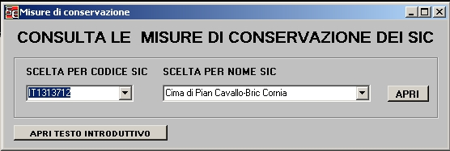

Per consultare le misure di conservazione scegliere il SIC in base al codice o in base al nome dal corrispondente menu' a discesa. Per aprire il testo introduttivo con le informazioni generali premere il tasto "Apri testo introduttivo"